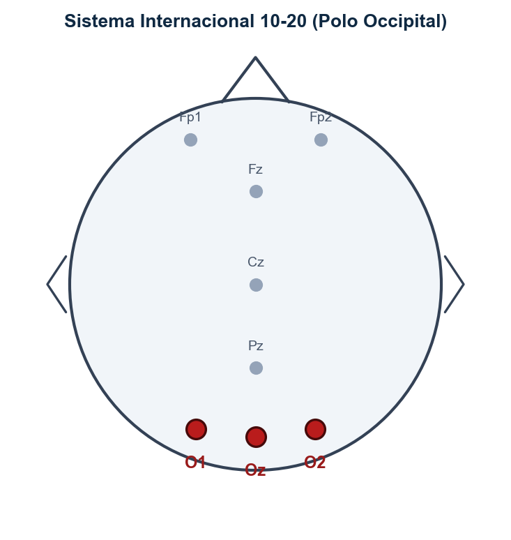
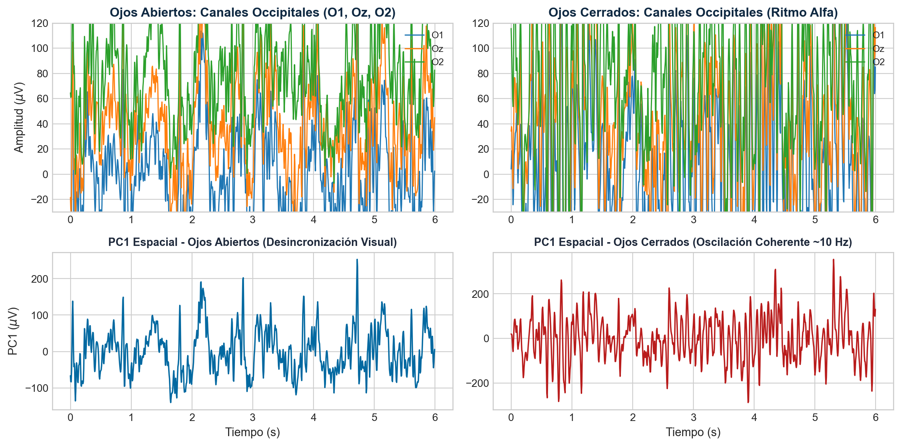
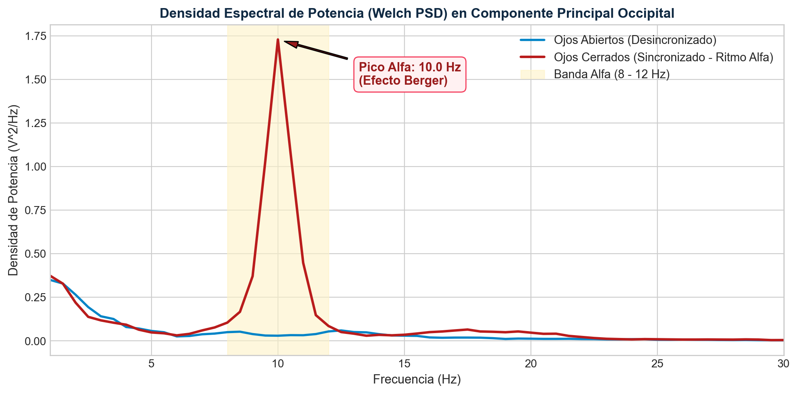
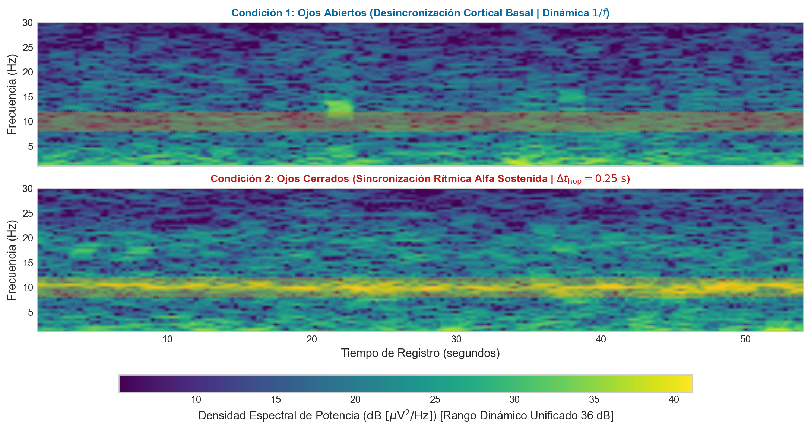
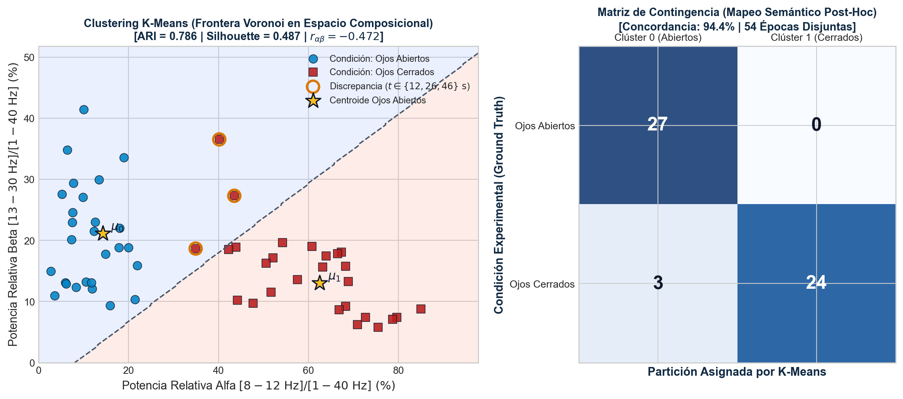

Caracterización Espectral y Agrupamiento No Supervisado del Ritmo Alfa Occipital en EEG
Filtrado Pasa-Banda FIR, Combinación Espacial por PCA, Estimación Welch/STFT y Clustering K-Means
1. Objetivo y Alcance del Trabajo
Diseñar e implementar un pipeline reproducible para caracterizar el ritmo alfa occipital (Efecto Berger) y evaluar la discriminabilidad de estados de reposo visual mediante agrupamiento no supervisado.
2. Etapas Metodológicas Integradas
Preprocesamiento & Espacio: Filtrado digital FIR pasa-banda de fase cero, combinación espacial por PCA y análisis tiempo-frecuencia (STFT).
Minería de Series Temporales: Segmentación temporal en 54 épocas disjuntas, atributos de Potencia Relativa y clustering K-Means.
Contextualización Biofísica: Cuantificación del ritmo alfa occipital, Efecto Berger y dinámica tálamo-cortical.
3. Conjunto de Datos & Protocolo Experimental
Registros basales de la base de datos pública PhysioNet EEGMMIDB (64 canales, Fs = 160 Hz) en reposo continuo con Ojos Abiertos (Run 1) y Ojos Cerrados (Run 2).

Figura 1: Ubicación del polo occipital (O1, Oz, O2) en el sistema internacional 10-20.
Texto a exponer:
"En este trabajo presento un pipeline computacional para el análisis y caracterización cuantitativa del ritmo alfa occipital en electroencefalografía (EEG), utilizando un enfoque no supervisado como estudio de caso intra-sujeto.
La metodología se estructura en tres etapas funcionales integradas:
Primero, abordamos el preprocesamiento y reducción espacial: implementamos un filtrado digital FIR de fase cero para evitar distorsiones temporales, realizamos una combinación espacial óptima mediante Análisis de Componentes Principales (PCA) y construimos representaciones tiempo-frecuencia continuas con la Transformada de Fourier de Tiempo Reducido (STFT).
Segundo, aplicamos técnicas de minería de series temporales: segmentamos el registro en 54 épocas temporales disjuntas e independientes, extrajimos características espectrales relativas robustas y evaluamos el agrupamiento con K-Means mediante métricas no supervisadas formales como el Adjusted Rand Index y el Silhouette Score.
Tercero, contextualizamos los resultados biofísicamente: caracterizando cuantitativamente el ritmo alfa y el Efecto Berger sobre registros basales del sujeto S001 de PhysioNet EEGMMIDB, adquiridos a 160 Hz en condiciones de ojos abiertos y ojos cerrados."
Preprocesamiento y Combinación Espacial mediante PCA
Acondicionamiento FIR de fase cero y proyección de covarianza en sensores occipitales (O1, Oz, O2)
1. Filtrado FIR Pasa-Banda & Recorte de Bordes
Filtro digital FIR (Finite Impulse Response) pasa-banda 1.0 - 40.0 Hz aplicado en ambas direcciones temporales, de modo que las distorsiones de fase se cancelan y se preserva la alineación temporal de los potenciales eléctricos. Se descartan 3.0 s en ambos extremos para mitigar transitorios de borde del pasa-alto.
2. Combinación Espacial por PCA Local
Los canales adyacentes O1, Oz y O2 registran la proyección común del dipolo occipital por conducción de volumen. PCA extrae el autovector dominante que maximiza la varianza total combinada:
Al tener pesos espacialmente simétricos (~1/√3 ≈ 0.577), PC1 actúa como un promedio ponderado óptimo en varianza. Para separar estados en esquemas supervisados con múltiples canales, una alternativa es Common Spatial Patterns (CSP).

Figura 2: Señales temporales de canales occipitales (A: ojos abiertos, B: ojos cerrados) y componentes PC1 proyectadas espacialmente mediante PCA.
TIEMPO ASIGNADO: 1:20 - 2:50
Texto a exponer:
"La primera etapa del pipeline consiste en el preprocesamiento de la señal.
Las señales de EEG tienen amplitudes muy pequeñas, del orden de los microvoltios, por lo que son especialmente sensibles al ruido y a diferentes tipos de interferencias. Para acondicionarlas se aplicó un filtro FIR pasa-banda entre 1 y 40 Hz de fase cero bidireccional, preservando la fase original de las oscilaciones neuronales.
Para evitar los transitorios de respuesta impulsional en los extremos del registro generados por el pasa-alto de 1 Hz, se recortaron tres segundos al inicio y al final de cada archivo.
A continuación, seleccionamos los canales occipitales O1, Oz y O2, ubicados anatómicamente sobre el lóbulo occipital y la corteza visual primaria, como se ilustra en el esquema topográfico 10-20.
Sobre estos tres sensores adyacentes aplicamos PCA para sintetizar la actividad coherente. La primera componente principal explicó el 90.61 % de la varianza total.
Matemáticamente, los coeficientes obtenidos, alrededor de 0,58 para cada canal, convergen de forma natural al vector unitario balanceado uno sobre raíz de tres. Esto es clave: significa que el algoritmo no supervisado descubrió por sí solo que el promedio espacial simple de los tres electrodos era la combinación óptima para maximizar la varianza común compartida por conducción de volumen.
En las trazas temporales de la figura se aprecia con claridad la transición: un trazado de baja amplitud en ojos abiertos versus una oscilación rítmica periódica de gran amplitud en ojos cerrados."
Análisis Espectral y Cuantificación del Efecto Berger
Estimación consistente de la PSD mediante método de Welch y caracterización de dinámica periódica vs. 1/f
1. Estimación Espectral de Welch
Promediado de periodogramas modificados (ventanas Hann de 2.0 s, espaciado FFT Δf = 0.5 Hz, solapamiento 50%, resolución física de Rayleigh ~0.75 Hz a -3 dB) para minimizar la varianza del estimador.
2. Fundamento Neurofisiológico (Efecto Berger)
Ojos Abiertos: Desincronización cortical (ERD) por flujo constante de aferencia visual retiniana.
Ojos Cerrados: Sincronización masiva (ERS) de las poblaciones tálamo-corticales en reposo.
3. Dinámica Periódica sobre Fondo Aperiódico 1/f
La potencia integrada en Alfa (8-12 Hz) aumenta 16.00 veces (~12 dB). El pico individual en f = 10.0 Hz emerge ~20 dB sobre la caída aperiódica 1/f.

Figura 3: Densidad espectral de potencia (PSD) estimada por Welch. A: escala lineal que resalta el efecto Berger; B: escala logarítmica (dB) que evidencia el pico de 10 Hz sobre el fondo aperiódico.
TIEMPO ASIGNADO: 2:50 - 4:20
Texto a exponer:
"Una vez obtenida la componente principal, caracterizamos su contenido frecuencial mediante la Densidad Espectral de Potencia.
Para lograr una estimación espectral consistente y de baja varianza utilizamos el método de Welch, empleando ventanas de Hann de dos segundos con un 50 % de solapamiento. Esto establece un espaciado entre muestras de la DFT de 0,5 Hz, con una resolución física de Rayleigh aproximada de 0,75 Hz acorde al ancho del lóbulo principal de la ventana.
En el panel lineal de la Figura 2 observamos el contraste clásico del Efecto Berger: en la condición de ojos abiertos predomina una desincronización cortical con baja potencia espectral, mientras que al cerrar los ojos emerge un pico oscilatorio resonante muy marcado centrado en 10,0 Hz.
La potencia integrada en la banda alfa de 8 a 12 Hz se incrementa 16 veces (alrededor de 12 dB) respecto a la condición basal.
Complementariamente, en el panel semilogarítmico en decibelios vemos que el pico oscilatorio de 10 Hz emerge casi 20 dB por encima del piso aperiódico 1/f, característico de la actividad electrofisiológica cerebral asincrónica."
Análisis Tiempo-Frecuencia Dinámico mediante STFT Discreta
Compromiso de Gabor-Heisenberg y seguimiento continuo de la persistencia espectral del ritmo alfa
1. Dinámica No Estacionaria del EEG
La Transformada de Fourier global oculta la modulación temporal. La STFT discreta permite rastrear la persistencia y transitorios dinámicos de las oscilaciones neuronales a lo largo de la adquisición.
2. Formulación Discreta & Parámetros de Análisis
Ventana Hann de N = 320 muestras (Tw = 2.0 s) con avance R = 40 muestras (Δt_hop = 0.25 s, solapamiento 87.5%):
X[m, k] = ∑_{n=0}^{N-1} x[n + mR] · w[n] · e^{-j 2π k n / N}
3. Interpretación de los Espectrogramas
En el panel superior de ojos abiertos se aprecia un espectro desincronizado y homogéneo a lo largo de los 55 segundos. En el panel inferior de ojos cerrados se observa una banda prominente, continua y de alta energía concentrada en torno a los 10 Hz, lo que confirma la persistencia temporal del ritmo alfa durante el reposo.

Figura 4: Espectrogramas tiempo-frecuencia continuos obtenidos vía STFT para las condiciones de ojos abiertos (arriba) y ojos cerrados (abajo) mostrando la modulación temporal del ritmo alfa.
TIEMPO ASIGNADO: 4:20 - 5:50
Texto a exponer:
"Dado que las bioseñales electroencefalográficas son procesos no estacionarios, complementamos el análisis espectral con la Transformada de Fourier de Tiempo Reducido, o STFT discreta.
Bajo el principio de incertidumbre de Gabor-Heisenberg, la resolución temporal física está gobernada por la duración de la ventana de análisis de dos segundos (320 muestras). Para mapear la evolución de forma continua y suave, desplazamos la ventana con un paso temporal o hop size de 0,25 segundos (40 muestras), lo que equivale a un solapamiento del 87,5 %.
En la Figura 3 calibramos el rango dinámico en 36 decibelios para visualizar tanto la actividad de fondo como las oscilaciones dominantes en una escala cuantitativa unificada.
En el panel superior de ojos abiertos se aprecia un espectro desincronizado y homogéneo a lo largo de los 55 segundos.
En el panel inferior de ojos cerrados se observa una banda prominente y continua en torno a los 10 Hz. Si bien el alto solapamiento produce un suavizado visual, es posible detectar sutiles atenuaciones transitorias de potencia (claramente señaladas con marcadores rojos en los segundos 12, 26 y 46), vinculadas a variaciones dinámicas del reposo que analizaremos en la etapa de clustering."
Agrupamiento de épocas mediante K-Means
Segmentación en épocas disjuntas, espacio composicional de Potencia Relativa y validación de clústeres
1. Segmentación en 54 Épocas Temporales Disjuntas (2.0 s)
La señal se dividió en 54 épocas de 2 s y se estimó el espectro de potencia de cada una mediante un periodograma de Hann.
2. Estandarización
Se calcularon las potencias relativas de las bandas alfa y beta, normalizadas respecto de la potencia total (1–40 Hz), y luego se estandarizaron mediante z-score antes del clustering.
Figura 5A. Cada punto representa una época caracterizada por su potencia relativa alfa y beta. K-Means separó automáticamente dos grupos bien diferenciados.
Figura 5B. La matriz de confusión muestra que solo 3 de las 54 épocas fueron asignadas al grupo opuesto (94.44% de concordancia).

Figura 5: Agrupamiento no supervisado mediante K-Means. A: espacio de atributos relativas con fronteras Voronoi; B: matriz de confusión que evalúa el desempeño biológico.
TIEMPO ASIGNADO: 5:50 - 7:40
Texto a exponer:
"En la etapa de minería de series temporales, el objetivo fue comprobar si un algoritmo no supervisado es capaz de particionar automáticamente los estados neurofisiológicos sin disponer de etiquetas previas durante el entrenamiento.
Para evitar muestras redundantes y respetar la independencia estadística requerida por el clustering, dividimos la componente principal en 54 épocas temporales disjuntas de dos segundos (27 épocas por condición).
Sobre cada época calculamos la potencia relativa en la banda alfa y en la banda beta normalizadas por la energía total de 1 a 40 Hz. Esta normalización composicional otorga robustez frente a posibles derivas lentas de impedancia del electrodo, operando la banda alfa como el eje primario de discriminación.
Tras estandarizar las características para operar en una escala homogénea, aplicamos K-Means con k=2. Evaluamos la estructura del agrupamiento mediante métricas formales no supervisadas: [pausa breve] obtuvimos un Adjusted Rand Index de 0.786 y un Silhouette Score de 0.487.
Al contrastar los clústeres asignados con las condiciones experimentales mediante un mapeo semántico post-hoc, la concordancia alcanza el 94.44 %, separando perfectamente todas las épocas de ojos abiertos (27/27) y 24 de 27 de ojos cerrados.
Las 3 épocas de ojos cerrados asignadas al otro grupo (resaltadas en naranja) ocurrieron en los segundos 12, 26 y 46 del registro, coincidiendo con las breves desincronizaciones de alfa visibles en el espectrograma, atribuibles a micro-modulaciones atencionales o pequeñas fluctuaciones del reposo."
Conclusiones
Conclusiones y Trabajos Futuros
1. Preprocesamiento & Reducción Espacial
El filtrado pasabanda aisló la actividad alfa y el PCA sintetizó el 90.61% de la varianza de los electrodos occipitales en un promedio espacial óptimo.
Acondicionamiento Óptimo
2. Clustering no supervisado
K-Means identificó de forma consistente los estados de ojos abiertos y cerrados, alcanzando un ARI de 0.786 y un coeficiente Silhouette de 0.487.
Agrupamiento No Supervisado
3. Limitaciones y perspectivas
La validación en un mayor número de sujetos, el fortalecimiento del preprocesamiento y la adaptación del pipeline al procesamiento en tiempo real representan los principales pasos para extender esta metodología.
Validación & Escalabilidad
TIEMPO ASIGNADO: 7:40 - 9:00
Texto a exponer:
"En conclusión, este trabajo muestra cómo articular las herramientas de procesamiento de señales y minería de series temporales en un pipeline completo para bioseñales de EEG.
El preprocesamiento digital y la combinación espacial por PCA permitieron sintetizar la actividad del polo occipital maximizando la varianza común sin introducir distorsión de fase.
El análisis espectral de Welch y la STFT caracterizaron con precisión la dinámica periódica del Efecto Berger respecto al fondo aperiódico, revelando una amplificación de 16 veces (12 dB) en la potencia alfa centrada en 10 Hz.
Finalmente, las técnicas de minería de series temporales en un espacio composicional de épocas disjuntas permitieron validar la separabilidad no supervisada de los estados basales con un Adjusted Rand Index de 0.786 y 94.44 % de concordancia.
Como consideraciones metodológicas para futuras extensiones, se destacan: evaluar esquemas inter-sujeto (como Leave-One-Subject-Out), calibrar la frecuencia individual alfa (IAF), incorporar módulos de limpieza de artefactos por ICA y migrar a filtros digitales causales sobre buffers deslizantes para aplicaciones en tiempo real.
Muchas gracias por su atención."
NOTAS DE ORADOR (GUION PARA EXPOSICIÓN DE 9 MINUTOS)